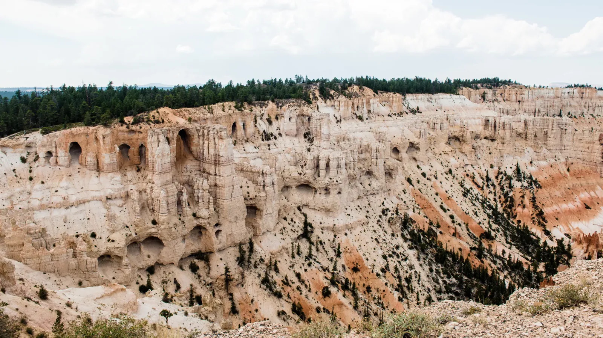

Standing Ovation
Bryce Canyon isn't actually a canyon. It wasn't carved by a river. The edge of a high plateau has simply been eaten away into a string of enormous natural amphitheaters, and thousands of stone spires called hoodoos fill the seats in shades of salmon, orange and cream, with dark pines rooted wherever they can find a foothold. The sculptor here is frost. Water seeps into the cracks, freezes and pries the rock apart a little more, then thaws and does it all over again on well over a hundred days a year. Give that enough winters and a plateau turns into a stadium.
Bryce was an early stop on a nine-day road trip through the Southwest. A night or so earlier, I'd slept in a hammock strung between two ponderosa pines in a sandy wash, about as far from a hotel as you can get. At the rim, the amphitheater appeared through a gap in the pines like a curtain being pulled back, and from up there it all melted into one rosy sweep of stone. Then I hiked down into it and the scale flipped. The spires that had looked like an audience became towers over my head, and the orange walls squeezed together into narrow gateways. One long cliff was pierced by natural windows. A short passage through a fin of rock framed the amphitheater beyond. Fair warning: every step down is a step you have to climb back out, and the rim sits at 8,000 feet and up, so bring more water than you think you need.

The sky never sat still. Blue turned to hazy white, then clouds built over the plateau until a dark storm sky hung over the whole amphitheater, with patches of sun lighting up the orange rock. August is monsoon season in this corner of Utah. Every hoodoo here is losing a slow argument with the frost, and the one behind it is already next in line.